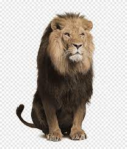

하이퍼관려태그 : a(anchor) 태그
a 태그는 현재 html문서와 다른 html 문서를 연결해서
페이지 이동을 할 수 있게 하는 기능을 제공
이때, a태그로 감싸진 문자열 == 하이퍼 링크
a태그를 이용한 하이퍼링크 관려
01_관련태그
target 속성 : 연결된 문서를 어디에서 열 것인지 지정하는 속성
기본값 : 같은 행
blank : 새탭 == 비어있는 탭
벨로그 이동
이미지 클릭시 페이지 이동
한 페이지 내에서 이동하기
동물1
동물2
동물3
동물1
목록으로 이동
동물2

목록으로 이동
동물3
목록으로 이동